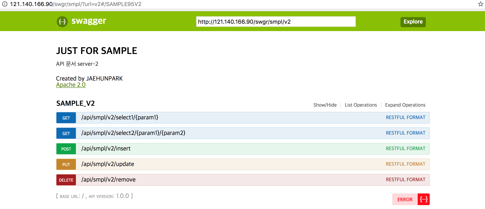

nginx load balancing
nginx와 apache
필자는 최근 back-end 앞단에 load balancing 을사용하여 worker의 가중치 설정, backup 서버설정, connection 이 적은 worker로 연결 등 다양한 옵션으로 load balancing을 수행하는 nginx에 대해서 글을적어보려고한다.
한가지 짚고 넘어가야될 부분은 load balancing을 위해 흔히 사용하는 apache와 nginx는 태생적으로 load balancing을 수행 하기위해 개발된 모듈이 아니라는 점이다.
apache와 nginx 모두 본연의 목적은 dynamic web project(jsp,php 등)가 아닌 순수 정적파일(static file)을 load하는 웹서버(web server) 로 사용하기위해 개발되었다.
본론으로 돌아가 nginx 를사용하여 nodejs 기반의 서버들을 어떻게 load balancing 하는지 살펴보자.
nginx 설치
필자는 역시 docker를 사용하여 nginx container를 구성하였으므로, nginx 이미지부터 만들어보자.
필자가 만든 nginx 이미지파일은 docker hub 에 올려놓았다.( 사용법을 기술해놓았으니 필요하신분은 pull 하셔서 사용하시면됩니다. )
이미지를 만들었으니, 이제 nginx container를 생성하자.
docker 를사용하지않는 분들은 debian 기준으로
최신 nginx 패키지 경로를 입력한다
nginx 최신 패키지를 다운받으려면 public key가 필요하므로
public key를 추가.
설치가 완료되었다.
어떻게 사용하는가
설치한 nginx를 어떻게 설정하는지 알아보자.
default.conf 파일을 열어 해당내용을 수정하던지, 또는 새로운파일명.conf 를만들어 작성해도된다.(nginx.conf에서 *.conf 를 참조한다)
필자는 다음과 같이 설정하였다.
필자는 사전에 nodejs 서버를 2대를 기동하였으며 nginx default port 인 80 포트로 접근시 target-server redirect 하도록 설정하였다.
주의할 사항은 log 경로 부분의 디렉토리가 존재해야한다.
target server 에 대한 세부적인 설정(가중치, 백업서버, 폭주 등) 에대한 설명은 load balancing 설정 을 참고하길바란다.
마지막으로 nginx를 재시작한다.
restart 명령어가 정상적으로 수행되었다면 제대로 동작하는지 확인해보자.

80 port로 listen하는 nginx 에 정상적으로 접근이 되는것을 확인할수있다.
load balancing이 제대로 수행되는지 눈으로 직접 확인하기위해서 필자는 같은 nodejs server 의 swagger 페이지부분에 server-1와 server-2라는 문구를 추가해두었다.
자세히보면 JUST FOR SAMPLE 문구 하단의 작은글씨로 API 문서 server-1 와 server-2를 확인할수있다.
참고로 필자는least_conn ; 옵션을 걸어두어 가장 클라이언트 연결 갯수가 적은 서버로 전달하는 설정 을 해두었다.
견해
nginx를 사용하여 nodejs 기반의 서버를 load balancing 하는 법을 알아보았다.
load balancing을 사용하게되면 필자가 생각하는 이점은 다음과 같다.
- 보안에좋다. ( client들은 nginx host로 접근하므로 back-end의 실제 host와 port를 숨길수있어 보안에 좋다. )
- 확장성이 용의하다. ( 서비스가 확장되어 back-end server가 추가될경우 nginx를 통해 관리될수있다 )
- 유연하다. ( 각 back-end 서버마다 설정을 다르게하여 하드웨어 스펙에 따라 가중치를 포함한 다양한 옵션을 지원한다 )
이런한 이점으로 반드시 multi server 를 운영하지 않더라도 단순 single server 를 사용함에 있어서도 앞단에 nginx를 사용하는것이 좋다고 생각된다.